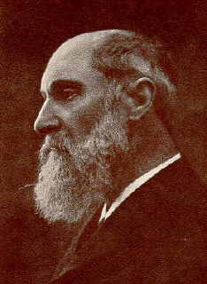

|  |
Fuchs' corneal dystrophy = Familial degenerative condition of the eye seen more commonly in women, with clouding of the cornea and often complicated by glaucoma.
Fuchs' heterochromic cyclitis = An idiopathic disorder of the eye, with heterochromia, uveitis of the lighter coloured eye, iridocyclitis, keratitic precipitates and often catarct.
Fuchs' spot = A small black spot on the fundus in high myopia, occurring after macular haemorrhage
Ernst Fuchs studied medicine in Vienna where he was a pupil of Ernst von Brücke (1819-1892), Christian Albert Theodor Billroth (1829-1894), and Carl Ferdinand von Arlt (1812-1887). Already while a student he held a position as assistant at the physiological institute in Innsbruck.
Having obtained his doctorate in 1874, he began as an apprentice of surgery under Billroth, and from 1876 to 1880 was assistant to the oculist Arlt who was then professor of ophthalmology in Vienna, a man for whom throughout his life Fuchs had the greatest admiration and respect. From 1880 to 1885 Fuchs was professor of ophthalmology in Lüttich, and in 1885 succeeded Eduard Jaeger Ritter von Jaxtthal (1818-1884) in the chair at Vienna.
Fuchs’ earliest work consisted of an examination of the pathology of conditions of the eye and this approach enabled him to publish in 1881 an analysis of sarcoma of the uveal tract based on 259 patients. In the same year he was appointed to the chair of ophthalmology in the University of Liege.
In 1882 Fuchs emphasised the difference between the acquired atrophic crescents and congenital crescents due to a defect in the development of the choroid which usually occurs at the lower margin of the optic disc and which is small and oval horizontally - a condition now often referred to as Fuchs coloboma. In 1885 he returned to Vienna, publishing an important paper on the anatomy of the iris, and in 1889 the first edition of his textbook of ophthalmology, Lehrbuch der Augenheilkunde.
This book was taken from his lectures in an endeavour to ensure that his students listened to his lectures rather than distract themselves by taking notes. It was a classic in its time and published in all European languages as well as Japanese and Chinese. Fuchs employed the then new technique of using large print for material suitable for students and small prints for that which he felt was important for people who were continuing to study ophthalmology as a postgraduate exercise.
Fuchs succeeded Eduard Jaeger Ritter von Jaxtthal (1818-1884) as ordinarius of ophthalmology in Vienna in 1885, and held this position until 1915. He died in Vienna in 1930.
Georg Joseph Beer (1763-1821) was the first professor of opthalmology in Vienna, appointed to an extraordinary chair in 1812, and he was succeeded by Fuchs’ teacher, Arlt, who rapidly made Vienna the centre of the world for this speciality. Fuchs added to this renown and an idea of the number of patients he saw may be gauged from an article in 1897 on «retinitis circinata» where he states that of 70.000 patients who had been seen during the 7,5 years in his clinic, he had only seen 11 patients with this rare condition.
The Shah of Persia, Nasr-ed-Din, sent his favourite wife, who had been diagnosed as having a cataract, together with several other women with cataracts, to Fuchs for his treatment. When Fuchs examined her he found that she had glaucoma and there was nothing he could do, but he was able to remove the cataracts from the women who accompanied her. The Shah could never comprehend how Fuchs could restore the sight of servants and could do nothing for his favourite concubine.
Fuchs was a great traveller and also enjoyed walking on his vacations in out-of-the-way places. Besides his clinical descriptions of diseases of the eye and his accurate recording of the various afflictions of the retina, as well as his interest in histopathology, he also was an innovator in surgery. Largely through his efforts the age-old custom of a patient after a cataract operation being kept in bed with both eyes covered in a dark room for a week before the dressings were changed, was abandoned. He introduced early ophthalmoscopic examinations after these operations which enabled him to discover that choroidal detachment was far more common than had previously been imagined.
At the outbreak of World War I Fuchs was a very wealthy man as one might imagine from the size of his practice, and he lived accordingly. But after the war, due to the inflation that ensued, he became quite hard up, and in view of his could do little about it, although he was helped greatly by his friends and admirers, who enabled him to undertake a lecture tour to the United States; subsequently he visited Spain, Egypt and Asia Minor.
A tall man with a slight stoop, Fuchs apparently embodied all of Osler’s ideals of equinamitas, maintaining a calm and unruffled exterior and never being angry or impatient. He spoke excellent English and maintained his investigatory curiosity right to the very end, when he died with angina pectoris.
Bibliography: